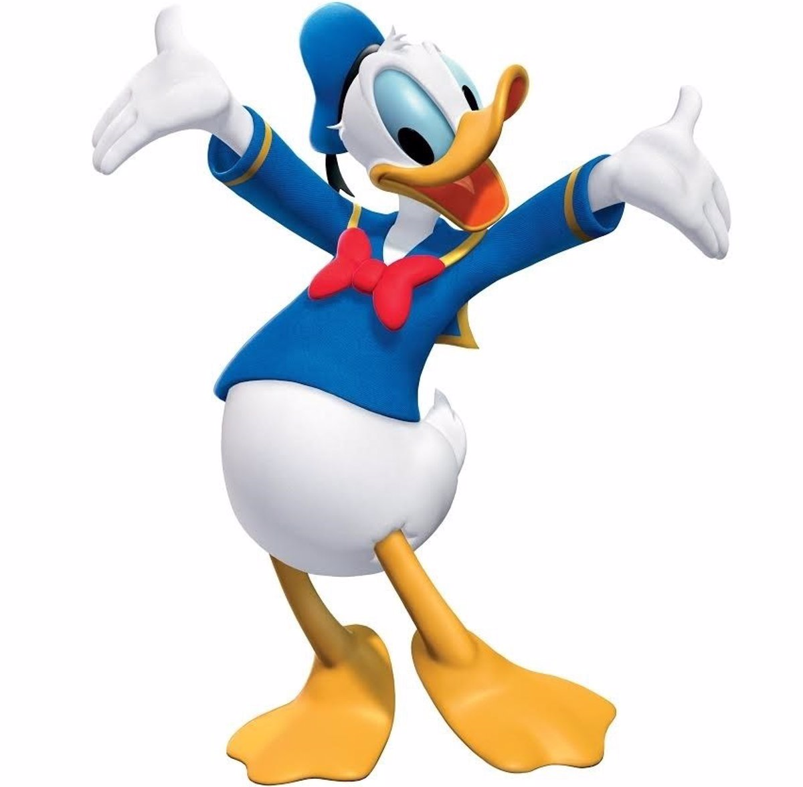
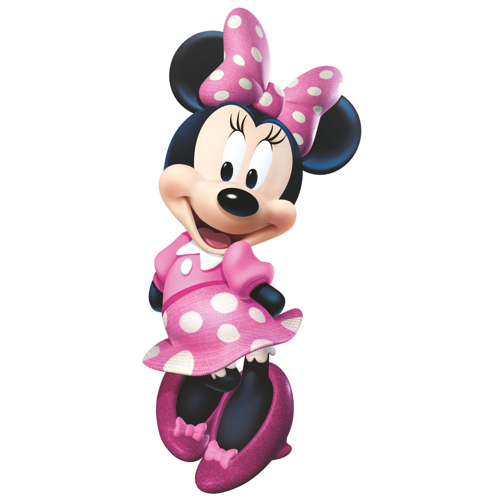
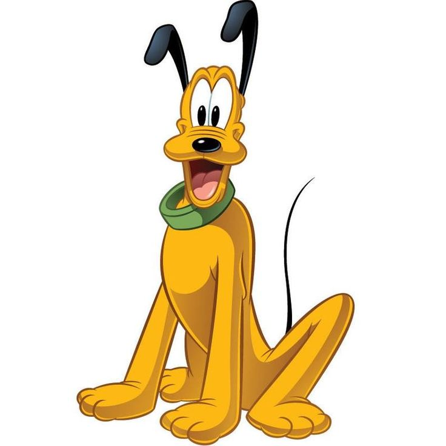

VOLVER
SOBRE MI
INFORMACION PERSONAL
Soy Mickey Mouse, el personaje animado más querido del mundo y un ícono del entretenimiento global.
Desde mi debut en 1928, he llevado alegría a millones de personas a través de películas, programas
de televisión y parques temáticos. Mi personalidad carismática, mi inconfundible risa y mi espíritu
optimista me han convertido en una figura atemporal. Me encanta la aventura, la amistad y hacer sonreír
a quienes me rodean. Siempre estoy listo para nuevos desafíos y para seguir inspirando a futuras
generaciones.
Además de ser una estrella del entretenimiento, me considero un embajador de la felicidad
y la creatividad. Con cada historia en la que participo, transmito valores como la amistad, la
perseverancia y la bondad. A lo largo de los años, he evolucionado junto con el público, adaptándome
a nuevas tendencias y tecnologías sin perder mi esencia.
Mi vida no se limita a la pantalla; en los
parques temáticos de Disney, tengo el privilegio de conocer a mis admiradores en persona, compartir
momentos mágicos y hacer realidad los sueños de niños y adultos. Estoy convencido de que la magia es
real cuando se comparte, y por eso me esfuerzo cada día en mantener viva la ilusión y la diversión.
MI VISIÓN
SOBRE MI
PERFIL PROFESIONAL
Icono mundial del entretenimiento con casi un siglo de experiencia en la industria del cine, la televisión y el marketing. Carismático, enérgico y con habilidades excepcionales para el liderazgo y la comunicación. Especialista en alegrar a niños y adultos por igual. Con una gran trayectoria, ha sido fuente de inspiración para generaciones y ha establecido un estándar de excelencia en la animación y el entretenimiento. Su capacidad para reinventarse a través de las décadas demuestra su adaptabilidad y relevancia en la cultura popular. Su dedicación a la magia del cine y su carisma lo han convertido en un símbolo de felicidad y creatividad a nivel global.
MIS AMIGOS
- Goofy
- Divertido y torpe, pero de gran corazón

- Pato Donald
- Amigo leal, aunque algo temperamental

- Minnie Mouse
- Mi eterna pareja y compañera de aventuras
 - Pluto
- Mi fiel perro
